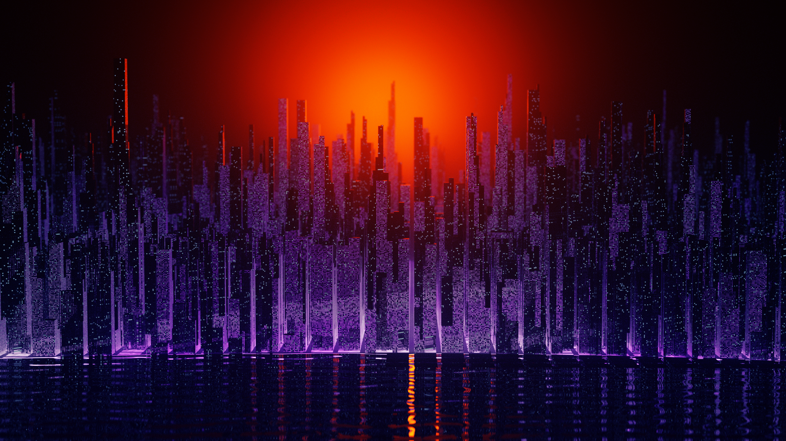
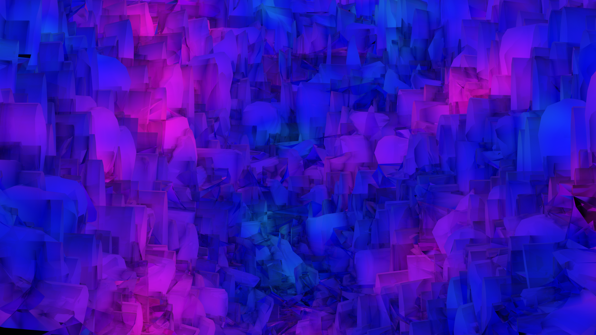
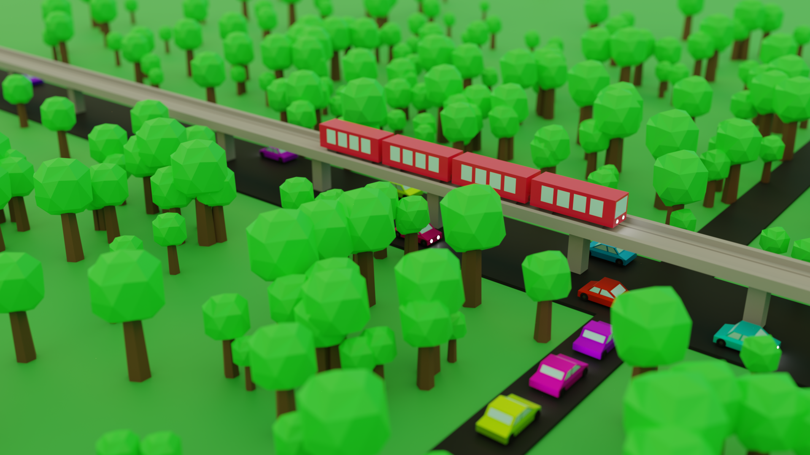
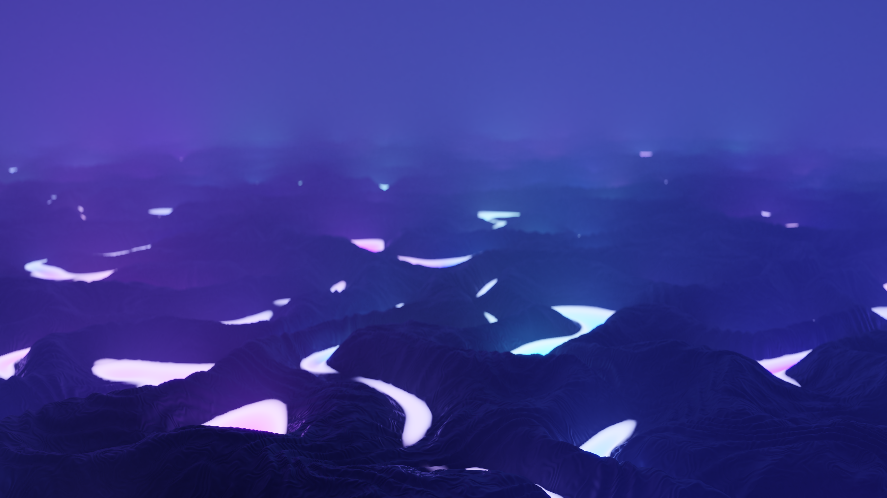

Quinn's Awesome Website!!!!
Cyberpunk City

This is my attmept to create a cyberpunk kinda futurisitc city!
Cyberpunk City

This is just like a generic abstract background or something, I don't know.
Cyberpunk City

This is my take on like the classic synthwave sunset in a desert!
Cyberpunk City

Here is my first try making a low poly scene!
Cyberpunk City

This is supposed to be an alien landscape I guess?